艦これ夏イベント2015：E5 西方海域戦線 カレー洋
公開日：
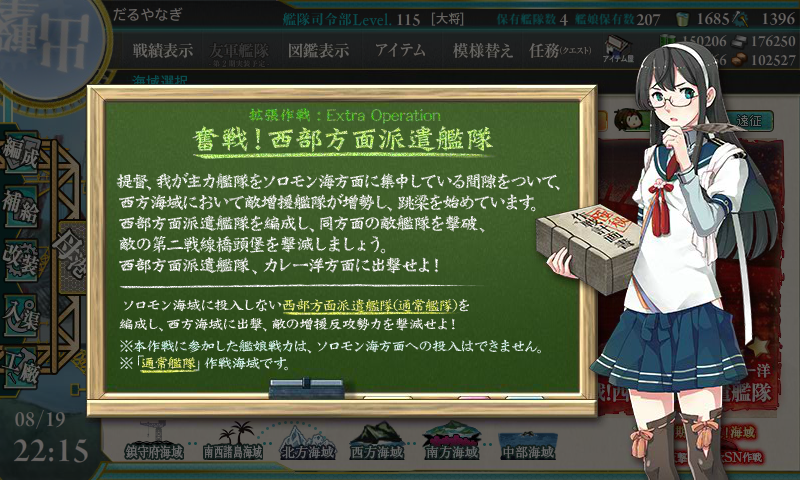
簡単だという噂だったが、最後ハマった。
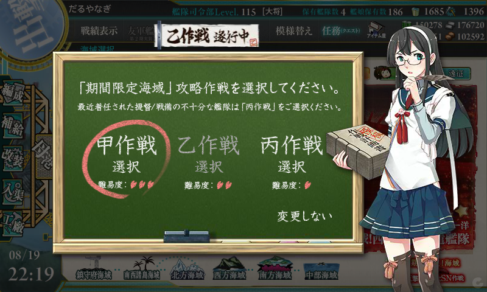
難易度は甲。
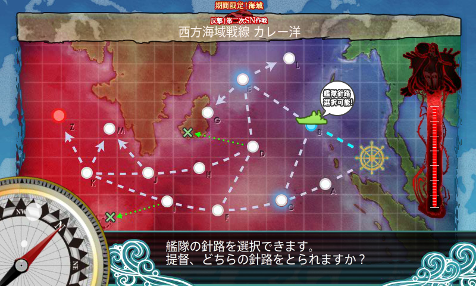
秋津洲＋駆逐で初手を固定して、下ルートを通る。駆逐2＋航巡も試したが、あまり戦績はよくなかった。秋津洲＋駆逐で雷巡を入れる方が、開幕の手数が増えて個人的には好き。
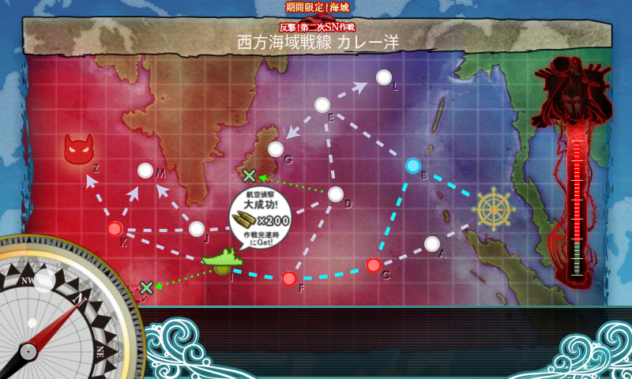
航空偵察は「秋津洲」がいなくても十分とれる。焼け石に水だけど、弾薬200とかもらえると、やっぱりちょっとうれしい。
戦闘経過
22回出撃、13回ボス到達、S勝利3つ。最初舐めてて適当にやっていたけれど、夜戦道具はしっかり用意しておくべきだった。
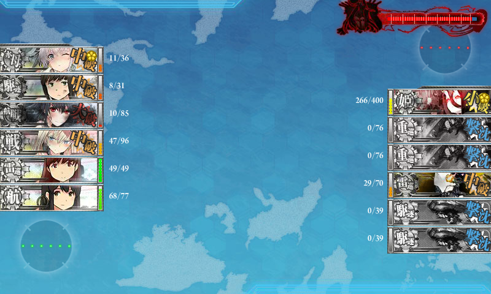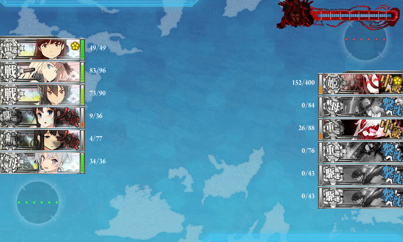
削りと止めで編成はあんまり変わんないけれど、削りの間に編成を煮詰めておかなかったのはミスだなぁ。
| 出撃 | C | F | K | Z | 注 |
|---|---|---|---|---|---|
| 1 | S | A | S | A | 秋津洲改(Lv81),吹雪改二(Lv81),山城改二(Lv121),Bismarck drei(Lv89),大井改二(Lv120),赤城改(Lv98) |
| 2 | S | 大井改二(Lv120),Bismarck drei(Lv89),長門改(Lv97),吹雪改二(Lv81),秋津洲改(Lv81),赤城改(Lv98) | |||
| 3 | S | S | 秋津洲改(Lv81),Bismarck drei(Lv89),長門改(Lv97),吹雪改二(Lv81),大井改二(Lv120),赤城改(Lv98) | ||
| 4 | S | A | S | A | |
| 5 | S | S | S | S | |
| 6 | S | ||||
| 7 | S | S | S | ||
| 8 | S | S | S | A | |
| 9 | S | S | S | A | |
| 10 | S | S | S | A | |
| 11 | 編成ミス | ||||
| 12 | S | A | S | A | 吹雪改二(Lv82),Bismarck drei(Lv90),長門改(Lv97),時雨改二(Lv107),三隈改(Lv93),赤城改(Lv98) |
| 13 | S | S | S | S | ゲージ削り終わり |
| 14 | S | ここから道中＋決戦支援 | |||
| 15 | S | A | S | A | 反省して、夜戦道具を追加 |
| 16 | S | S | |||
| 17 | S | ||||
| 18 | S | A | |||
| 19 | S | S | S | A | |
| 20 | S | S | S | A | 大井改二(Lv120),Bismarck drei(Lv90),長門改(Lv97),時雨改二(Lv108),赤城改(Lv98),秋津洲改(Lv82) |
| 21 | S | S | S | A | |
| 22 | S | S | S | S |
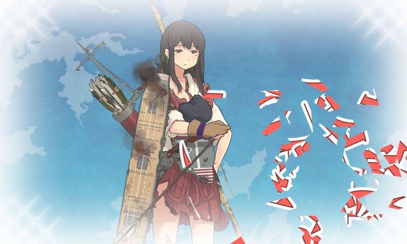
正直、支援艦隊はあってもダメなときはダメだな。イイ感じに削れても、戦艦の砲撃が直撃したら終わり。とくに14戦目から連続撤退を強いられて、ハゲそうになった（「赤城」ぇ……(;^ω^)）。
でも、艦載機が育ってくると目立って開幕爆撃が安定してきて、19戦目以降は安定してボスまで到達できた。最後の編成はかなり感触よかった（S勝利獲れないのは正直運が悪すぎた）のでお勧めかも。
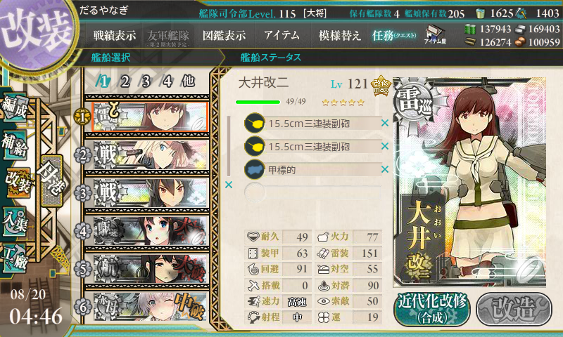 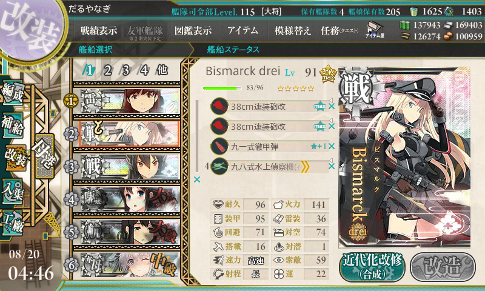 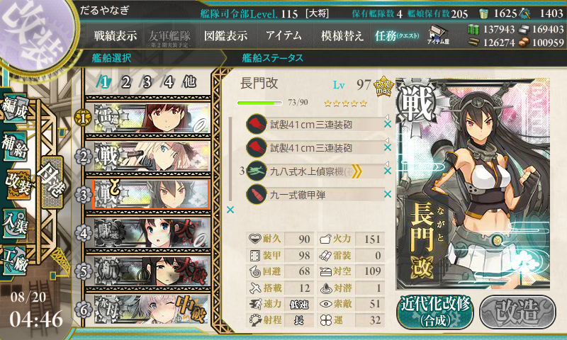 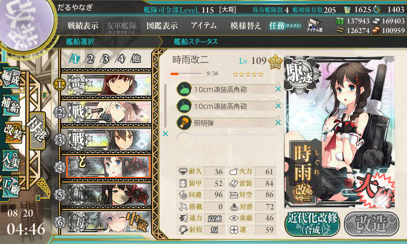 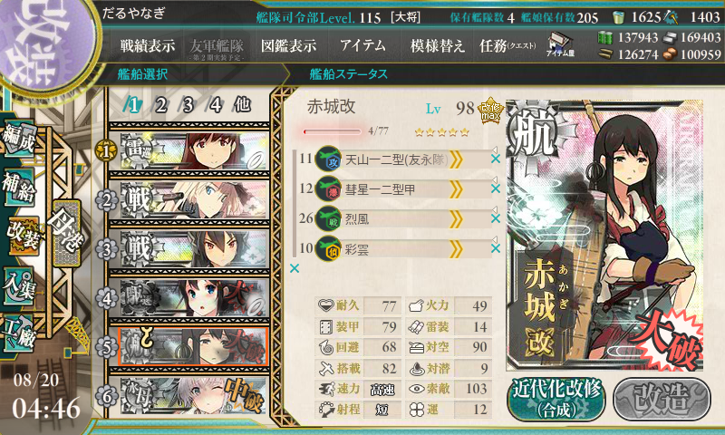 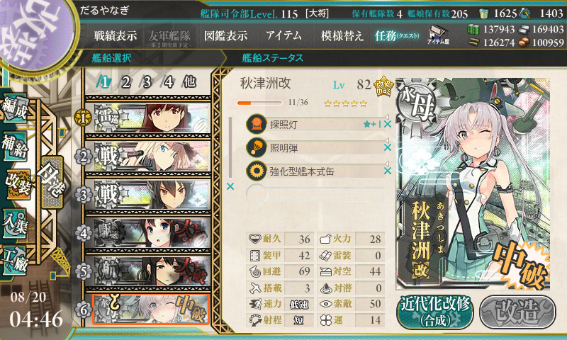
ボス戦と艦隊行動の関係。
- A：反航戦
- A：同航戦
- S：反航戦
- A：反航戦
- A：反航戦
- A：同航戦
- A：同航戦
- S：同航戦
- A：反航戦（以下、最終形態）
- A：反航戦
- A：反航戦
- A：反航戦
- S：Ｔ字戦(有利)
反航戦でも S はとれるけど、同航戦以上とった方が確率は高い。それにしても、反航戦ばっかり引いてるなぁ。
消費資材
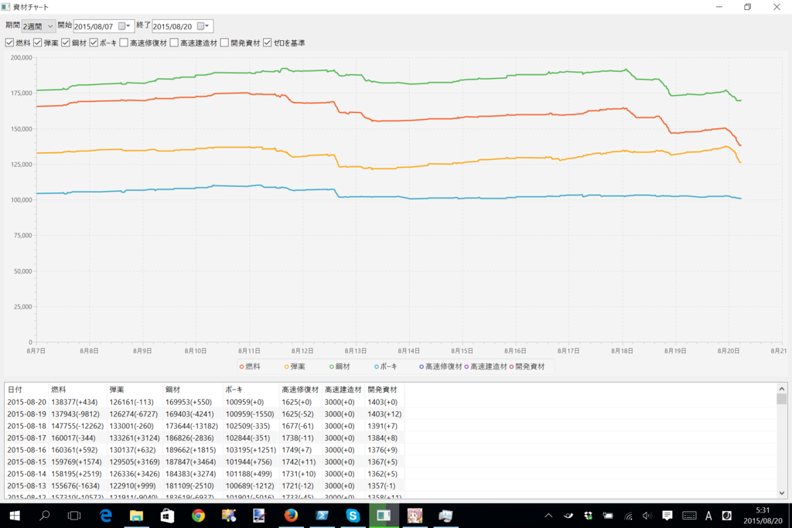
燃料10,000、弾薬7,000、鋼材4,000、ボーキサイト1,500、高速修復剤50個。